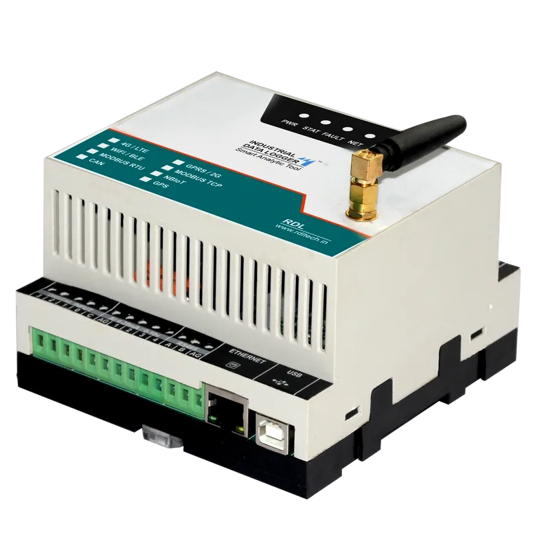
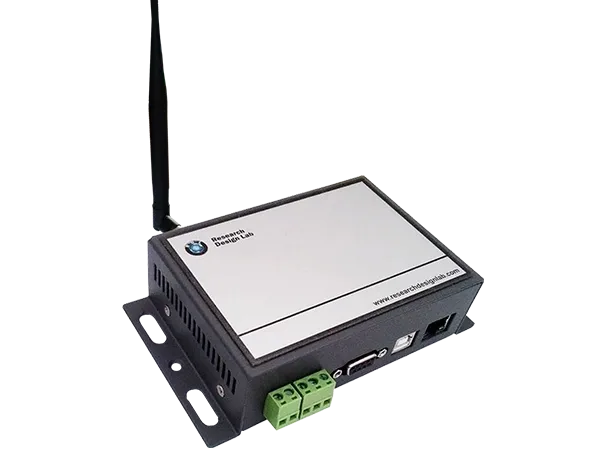
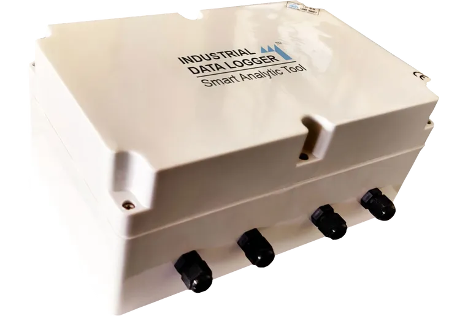

Industrial Data Logger 4G / LTE

Industrial Data Logger 4G / LTE product is designed to seamlessly integrate with the IoT and Analytical processing systems. Supporting multiple I/O options, interfaces data logger is a perfect fit to build custom automation solutions.
Industrial Data Logger 4.0 can used to build the custom industrial solution for monitoring and controlling PLC and SCADA, HMI, VFD Motors, servo, Valves, energy meter, actuators, relays, encoder, rfid and finger print readers & industrial sensors .
Find out moreIndustrial Data Logger 2G / GPRS
Industrial Data Logger 2G / GPRS product is designed to seamlessly integrate with the IoT and Analytical processing systems. Supporting multiple I/O options, interfaces data logger is a perfect fit to build custom automation solutions.
Industrial Data Logger 4.0 can used to build the custom industrial solution for monitoring and controlling PLC and SCADA, HMI, VFD Motors, servo, Valves, energy meter, actuators, relays, encoder, rfid and finger print readers & industrial sensors .
Find out moreIndustrial Data Logger - WiFi
Industrial Data Logger - WiFi product is designed to seamlessly integrate with the IoT and Analytical processing systems. Supporting multiple I/O options, interfaces data logger is a perfect fit to build custom automation solutions.
Industrial Data Logger 4.0 can used to build the custom industrial solution for monitoring and controlling PLC and SCADA, HMI, VFD Motors, servo, Valves, energy meter, actuators, relays, encoder, rfid and finger print readers & industrial sensors .
Find out moreMODBUS to 4G /LTE Gateway
MODBUS to 4G / LTE Gateway Allows to communicate MODBUS RTU & MODBUS TCP Network , the device can pre-configured to poll and collect data from a variety of Modbus Slaves, energy meters, Sensors, industrial PLC's , VFD data are sent to the centralized server or cloud server . The Device support SSL with multiple configurable protocol like JSON / MQTT / FTP.
Find out more
MODBUS to 2G / GPRS Gateway
MODBUS to 2G / GPRS Gateway Allows to communicate MODBUS RTU & MODBUS TCP Network , the device can pre-configured to poll and collect data from a variety of Modbus Slaves, energy meters, Sensors, industrial PLC's , VFD data are sent to the centralized server or cloud server . The Device support SSL with multiple configurable protocol like JSON / MQTT / FTP.
Find out more
MODBUS to WiFi Gateway
MODBUS to WiFi Gateway Allows to communicate MODBUS RTU & MODBUS TCP Network , the device can pre-configured to poll and collect data from a variety of Modbus Slaves, energy meters, Sensors, industrial PLC's , VFD data are sent to the centralized server or cloud server . The Device support SSL with multiple configurable protocol like JSON / MQTT / FTP.
Find out more
Data Logger 4G / LTE with GPS
Data Logger 4G / LTE with GPS comes with IP 68 enclosure & supports a variety of IO interfaces like Analog , Digital , MODBUS RTU , MODBUS TCP & CAN with inbuilt rechargeable battery . This Data logger can be used in Fleet management, Generator & Remote Asset management system: Data Logger 4G / LTE product is designed to seamlessly integrate with the IoT and Analytical processing systems. Supporting multiple I/O options, interfaces data logger is a perfect fit to build custom automation solutions The Device support SSL with multiple configurable protocol like JSON / MQTT / FTP.
Find out more
Battery Operated Data Logger Wifi /GPRS / 4G /LTE
Battery Operated Data Logger comes with IP 68 enclosure & supports a variety of IO interfaces like Analog , Digital , MODBUS RTU , MODBUS TCP with inbuilt battery which can be replaced 6/12/24 months once. This Data logger can be used in Remote Environment data Sensing System , Remote Asset management , Solar / Wind mill Monitoring System . Data Logger product is designed to seamlessly integrate with the IoT and Analytical processing systems. Supporting multiple I/O options, interfaces data logger is a perfect fit to build custom automation solutions The Device support SSL with multiple configurable protocol like JSON / MQTT / FTP.
Find out more
Cold Storage Data Logger WiFi / GPRS / 4G / LTE
Cold Storage Data Logger comes with IP 68 enclosure & supports a variety of IO interfaces like Analog , Digital , MODBUS RTU , MODBUS TCP with multiple Temperature sensor interfacing options . This Data logger can be used in Cold Storage monitoring system , Food storage & Processing system . Data Logger product is designed to seamlessly integrate with the IoT and Analytical processing systems. Supporting multiple I/O options, interfaces data logger is a perfect fit to build custom automation solutions The Device support SSL with multiple configurable protocol like JSON / MQTT / FTP.
Find out more